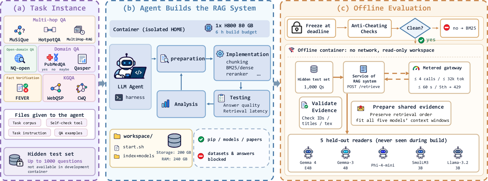

Under review

Retrieval-augmented generation (RAG) is a well-established paradigm for augmenting large language models (LLMs) with information retrieved from external corpora. However, developing effective RAG systems requires substantial engineering effort and iterative experimentation, as effective design choices vary across tasks and domains. With rapid advances in LLM agent capabilities, we ask how well these agents can autonomously build RAG systems and how effectively they can improve them through iteration. In this paper, we propose AutoRAGBench, the first benchmark to evaluate how well LLM agents develop RAG systems from scratch in an open code space. It comprises nine RAG system development tasks. For each task, agents build RAG systems from scratch without starter code or prescribed strategies, under a six-hour budget on a single H800 GPU. They analyze task data, implement RAG pipelines, and iteratively refine their designs based on experimental feedback. We evaluate nine agent configurations and analyze both the effectiveness of the resulting RAG systems and their development trajectories. GPT-6.1 Sol with Codex CLI achieves the highest average score of 56.1. The composite Human-SOTA baseline averages 44.4. These results show that LLM agents can automate effective RAG system development. When starting from a human-designed system on each of seven tasks, GPT-6.1 Sol with Codex CLI improves the score by 16.6 points on average while preserving the methods' core mechanisms.
Our findings. GPT-6.1 Sol with Codex CLI achieves the highest average answer accuracy across nine tasks, 56.1 points. It exceeds Reference RAG by 9.7 points and the composite Human-SOTA baseline under our protocol by 11.7 points. It also improves seven existing human-designed systems by 16.6 points on average while preserving their core mechanisms. In our adapted comparisons, it also outperforms automated searches over predefined RAG pipelines, including a search driven by the same LLM. Across 77 builds with comparable development scores, 72 reach scores at least one point above their first version. The median first-to-last gain is 5.5 points. Yet 20 builds have last observed development scores at least one point below their best. Larger development gains do not always correspond to higher hidden-test answer accuracy.
Scores are primary metrics ×100 averaged over five held-out answering models; Avg is the mean over the nine tasks. GPT-6.1 Sol with Codex CLI achieves the highest average, 56.1, and the best score on seven tasks. All nine agent configurations outperform naive BM25 RAG, and seven outperform the reference system. The composite Human-SOTA baseline averages 44.4, below all nine agent configurations.
Click any bar for that system's per-task scores.
Table. Main results, ranked by average score. Bold marks the best score on each task. The composite Human-SOTA is a per-task envelope over the adapted human-designed implementations, not a single deployable system or an upper bound on human-designed RAG; it has scores averaged over the five answering models only.
We assign each agent a target benchmark and provide the benchmark's external knowledge source and question–answer examples from its training split. Each agent operates in a clean container with one H800 GPU and internet access during development. The agent has six hours to build an accurate and efficient RAG system from scratch, without starter code and prescribed designs.
The task suite in AutoRAGBench consists of nine benchmarks spanning open-domain question answering (QA), document-based multi-hop QA, domain-specific QA, fact verification, and knowledge-graph QA. For each benchmark, we retain up to 10,000 training examples and 1,000 test examples to ensure comparable evaluation scales across tasks.
Each build runs in a clean and isolated container, with no persistent agent memory carried over between runs. The test set remains outside the container and unavailable to the agent during development. Agents build RAG systems from scratch, without starter code, a prescribed pipeline, or a predefined configuration space. Given a question, each system must return an ordered list of evidence spans from the supplied corpus.
We audit development trajectories and submitted RAG systems for the use of additional corpora, downloads of benchmark test sets, and other rule violations. When we confirm a violation, we rerun the experiment to give the agent another chance to develop a compliant RAG system. If the new system passes the audit, we evaluate it; otherwise, we assign the run the naive BM25 RAG baseline score.
For each test question, five answering models independently generate answers from the same evidence retrieved by the system. We report the downstream answer score and retrieval latency of the system. Per question, the gateway allows at most four Qwen3.5-4B calls and 32,000 total tokens within 60 seconds. The service cannot access the five held-out answering models.
Table. Task suite statistics and evaluation metrics.
Whenever available, we use the native agent harness developed by each LLM provider. When a native harness is unavailable, we use a harness commonly paired with the model.
We select models from four families with different parameter counts to assess the robustness of system comparisons across answering models.
We evaluate both the RAG systems that agents build and the processes they use to develop them. We then examine whether agents can improve human-designed methods and how they compare with automated RAG frameworks.
Interactive versions of the paper's figures: hover for values, click legend entries to filter.
GPT-6.1 Sol ranks first under all five answering models, and the top four configurations keep identical ranks. The lines stay nearly parallel: the gap between the best and worst configurations remains 10.2 to 10.7 points. The lead over the reference system changes more, with a mean of 1.5 to 5.9 points and six to nine configurations above it.
Each line plots a configuration's nine-task average under one answering model, minus the reference system's average under the same answering model. Click a legend entry to highlight it.
Every agent-built system takes longer on average to retrieve evidence than Reference RAG. Mean retrieval latency ranges from 0.50 to 2.01 seconds per question. This is 1.4 to 5.8 times the reference system's mean of 0.35 seconds. Naive BM25 RAG, Reference RAG, and Gemini 3.8 Flash with OpenCode lie on the Pareto frontier. The three Sol configurations with Codex CLI also lie on it.
The dashed line marks the Pareto frontier. We measure retrieval latency from receiving the question to returning the evidence. It excludes final answer generation by the answering model.
On WebQSP, all nine configurations outperform the reference system, by 14.1 points on average. Seven also outperform it on CWQ, with a maximum gain of 27.3 points. All configurations improve on the reference system on the two domain-specific tasks, PubMedQA and QASPER. On HotpotQA, the best configuration gains 13.0 points, but only three outperform the reference system. On NQ and FEVER, the largest gain is only 1.5 points on each task.
Drawn from the main results table: each dot is one configuration's score minus Reference RAG on that task. Diamond: Naive BM25 RAG; square: composite Human-SOTA.
Most systems combine classic indexes with a reranker: 63 use a sparse index, 58 use dense vectors, and 58 use a reranker, of which 27 are fine-tuned. LLM use at indexing time is rare: only three systems index LLM-generated content, and only one uses a hypothetical document. Designs change markedly with the task. All 18 knowledge-graph systems traverse the graph and return selected lines or paths, and 12 of them use no reranker; all nine QASPER systems rank within the identified paper; and eight FEVER systems use no dense vectors.
Cells count systems out of nine per task. Shares use all 81 systems except for retrieval flow, which excludes the 18 graph-traversal systems. Multi-choice groups can exceed 100%. A second coder has yet to verify the labels.
Across the nine configurations, 77 builds had at least two observed versions. Their median net gain in development score from the first to the last observed version was 5.5 points. The last observed version matched the observed peak in 46 builds and fell at least one point below it in 20. In all, 72 of the 77 builds (93.5%) improved on their first score by at least one point at some stage, and the median time to the first peak was 4.0 hours into the six-hour budget.
Each curve shows the change in Qwen3.5-4B score from the first evaluated version on a fixed set of questions for that build. Axis scales vary by task. Stars mark the earliest maximum. Click a legend entry to add or remove a configuration.
Testing and analysis took most of the development budget in these builds. Averaged over nine tasks, these activities accounted for 57–87% of build time and 55–70% of output tokens. In thousands of tokens, median output per round was 11.0 for GPT-6.1 Sol, 5.8 for GPT-6 Sol, 3.9 for GPT-5.6 Sol, and 2.5 for GPT-5.6 Luna. This order matches the mean score ranking in the main results table.
Panels show each activity's share of build time and output tokens per hour, averaged across nine tasks. We count a round when an agent edits or rebuilds the system and then launches an evaluation.
GPT-6.1 Sol gains 7.4 to 26.4 points, with a mean of 16.6. DeepSeek gains 3.9 to 12.1 points, with a mean of 8.9. GPT-6.1 Sol scores higher on all seven tasks.
Labels give score gains averaged over five answering models after six hours. We use HippoRAG 2 for MuSiQue, LightRAG for MH-RAG, RAPTOR for QASPER, SubgraphRAG for WebQSP and CWQ, and HyDE for PubMedQA and HotpotQA.
The agent outperforms every delivered framework system. On the six tasks both frameworks complete, AutoRAG averages 44.5 and FlashRAG averages 43.6. The agent averages 57.0, and Reference RAG averages 45.0.
Bars show hidden-test scores. FlashRAG did not finish indexing HotpotQA within six hours.
As an agent develops its RAG system, we record its actions and observations at each step. We call this sequence of records the run's development trajectory. Browse the condensed trajectories of GPT-6.1 Sol with Codex CLI on all nine tasks.